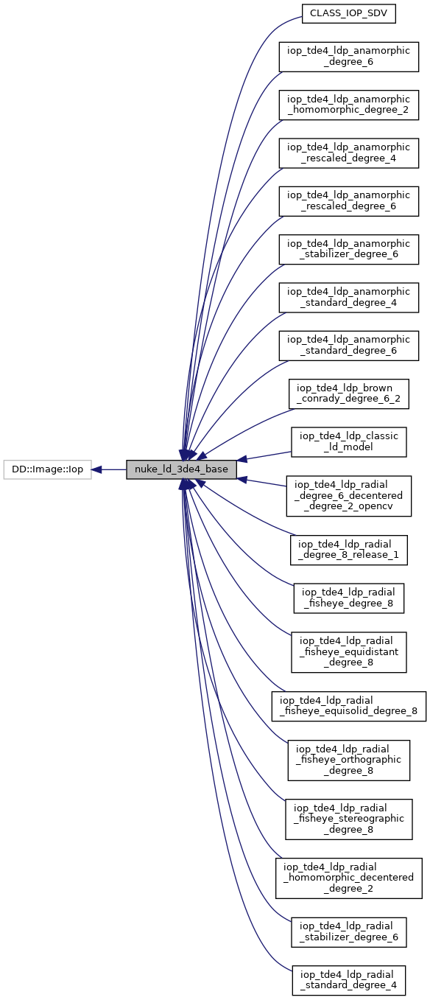
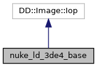

|
LDPK
|
The baseclass for Nuke plugins around LDPK-based lens distortion models. In order to implement a Nuke plugin, derive from this class. More...
#include <nuke_ld_3de4_base.h>


Public Member Functions | |
| nuke_ld_3de4_base (Node *node, ldm_type *ldm) | |
| void | knobs (DD::Image::Knob_Callback f) |
| void | _validate (bool) |
| void | _request (int x, int y, int r, int t, DD::Image::ChannelMask channels, int count) |
| void | _open () |
| void | engine (int y, int x, int r, DD::Image::ChannelMask channels, DD::Image::Row &out) |
Static Public Attributes | |
| static const DD::Image::Iop::Description | description |
Protected Attributes | |
| bool | _verbose_request |
| bool | _verbose_validate |
| bool | _verbose_constructor |
| bool | _verbose_destructor |
The baseclass for Nuke plugins around LDPK-based lens distortion models. In order to implement a Nuke plugin, derive from this class.